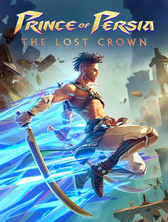

1.- Prince of Persia

Excelente recauchutado del clásico plataformero, que se convierte en un
estupendo metroidvania donde la exploración densa y la habilidad
pura están entre las principales exigencias.
Una excelente oportunidad para recuperar una franquicia
infraexplotada y el mejor juego de UbiSoft en años.
2.- Tekken 8

Pues ya estamos casi todos: después de un tramo final
del año pasado en el que tuvimos nuevas entregas de
'Street Fighter' y 'Mortal Kombat', es el turno de
otra de las sagas de lucha por excelencia.
Con un róster de 32 mostrencos, el juego ha hecho hincapié en
un estilo de juego más agresivo y arcade, y la jugada le
ha salido estupendamente.
3.- Mario vs. Donkey Kong

Uno de los últimos juegos de Mario para la primera Switch
(si los rumores se convierten en realidad) es este remake de
un memorable juego de puzles de Nintendo DS. Más orientado a
las plataformas, pero sin perder su elemento cerebral, es un
desafío familiar y amable que permite las partidas a cuatro
manos.
4.-Skull and Bones

El ambicioso juego de piratas de UbiSoft fue uno de los
títulos más esperados del año, aunque sea solo por los muchos
meses que lleva cociéndose. Aunque ha recibido abundantes
críticas, se puede detectar en él mucho del estilo Ubi de
generar blockbusters, con una ambientación es novedosa, y un
juego cooperativo que ha dado muchas sorpresas.
5.- Final Fantasy 7 Rebirth

La segunda parte del ambicioso remake de una de las entregas
más legendarias de 'Final Fantasy', su séptima parte, nos
muestra el mundo de Gaia en toda su plenitud, después de una
primera mitad que se centró en Midgar. De nuevo encontraremos
eventos que recordamos del juego original ampliamente
reescritos y modificados, y el desarrollo se volcará en un
mundo ya prácticamente abierto.